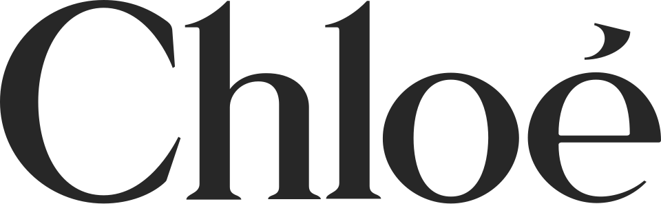

끌로에 Chloé
끌로에(Chloé)는 1952년 Gaby Aghion이 설립한 프랑스의 럭셔리 패션 하우스이다. 고급 기성복(prêt-à-porter)을 내세워 출발했으며 현재 리슈몽 그룹이 소유하고 있다.
최종 업데이트

끌로에는 어떤 브랜드인가
끌로에는 1952년 설립된 프랑스의 럭셔리 패션 하우스로, 당시 새로운 개념이던 고급 기성복을 제안하며 출발했다. 본사는 파리에 있으며 럭셔리 브랜드 지주회사 리슈몽 그룹이 소유하고 있다.
젊고 보헤미안적인 미감이 브랜드의 특징이며, 여러 향수를 성공시켰다. Marion Cotillard, Sienna Miller, Madonna, Emma Stone, Katie Holmes 등 많은 유명인이 끌로에를 착용했다.
Karl Lagerfeld, Stella McCartney, Phoebe Philo를 비롯한 여러 아티스틱 디렉터가 브랜드를 이끌어 왔다. 2023년 10월 기준 Chemena Kamali가 크리에이티브 디렉터를 맡고 있다.
끌로에는 어떻게 시작되고 성장했나
1952년 이집트 출신 Gaby Aghion이 당시 새로웠던 고급 기성복을 제안하며 끌로에를 세웠다. 1953년 Jacques Lenoir가 합류해 사업 경영을 맡았고, 덕분에 Aghion은 창작에 전념할 수 있었다.
1956년 첫 컬렉션을 파리의 Café de Flore에서 선보였으며, 1966년에는 Karl Lagerfeld가 주요 디자이너로서 끌로에를 1970년대를 상징하는 브랜드 중 하나로 만들었다. 1971년 파리 3 rue Gribeauval에 첫 부티크를 열었고, Aghion과 Lenoir가 운영하던 하우스는 1985년 Alfred Dunhill Ltd.에 인수되었다.
끌로에의 브랜드 아이덴티티는 무엇인가
Gaby Aghion이 고급 기성복이라는 새 개념으로 시작했고, 젊고 보헤미안적인 미감과 Paddington bag 같은 'It' bag으로 알려진 파리의 하우스이다.
끌로에의 대표 제품과 서비스는 무엇인가
2002년 끌로에는 가방, 소형 가죽 제품, 신발 라인을 선보였다. Phoebe Philo 시기에 소개한 Paddington bag은 최초의 'It' bag 중 하나가 된 가죽 핸드백이다.
향수로는 Chloé Classique(1973), Love, Chloé(2010), See by Chloé(2012)가 있으며, Coty는 2005년 Unilever Cosmetics International을 인수하며 향수 라이선스를 확보했다. 안경테와 선글라스는 Marcolin(1998년부터), Marchon Eyewear(2012~2019년), Kering Eyewear(2020년부터)와 라이선스 계약을 맺었다.
2001년 확산 라인으로 시작한 See by Chloé는 2022년 3년에 걸쳐 단계적으로 정리하겠다고 발표했다.
끌로에는 지금 어떤 상태인가
현재 끌로에는 리슈몽 그룹이 소유하고 있다. 2023년 10월부터 Chemena Kamali가 크리에이티브 디렉터를 맡고 있으며, 2024년부터 Laurent Malecaze가 CEO를 맡고 있다.
2022년에는 See by Chloé 사업을 3년에 걸쳐 단계적으로 정리하겠다고 발표했다. 2024년에는 Chloé Perfume이 Guan Xiaotong을 첫 중국인 브랜드 앰배서더로 지명했다.
끌로에 로고는 어떻게 변해왔나
자주 묻는 질문
끌로에는 어느 나라 브랜드인가요?
끌로에는 프랑스의 패션·럭셔리 브랜드입니다.
끌로에는 언제 설립되었나요?
끌로에는 1952년 설립되었습니다.
끌로에의 브랜드 아이덴티티는 무엇인가요?
Gaby Aghion이 고급 기성복이라는 새 개념으로 시작했고, 젊고 보헤미안적인 미감과 Paddington bag 같은 'It' bag으로 알려진 파리의 하우스이다.
끌로에의 대표 제품은 무엇인가요?
2002년 끌로에는 가방, 소형 가죽 제품, 신발 라인을 선보였다.
끌로에는 어느 기업이 소유하고 있나요?
현재 끌로에는 리슈몽 그룹이 소유하고 있다.
끌로에의 창업자는 누구인가요?
끌로에의 창업자는 Gaby Aghion입니다(위키데이터 기준).
끌로에의 본사는 어디에 있나요?
끌로에의 본사는 파리에 있습니다(위키데이터 기준).
출처와 검증
끌로에 관련 참고: 공식 웹사이트 · 위키데이터 Q1075391 · 한국어 위키백과 · 영어 위키백과. 브랜드명은 한글과 원어를 함께 표기하되 데이터에 없는 표기는 만들지 않습니다. 기원 국가·설립연도는 검수된 정의문에서 확인된 값을 우선하고, 없을 때만 공식 웹사이트 URL이 일치하는 위키데이터 개체의 값을 씁니다. 위키데이터 값은 2026-11-13 기준입니다.